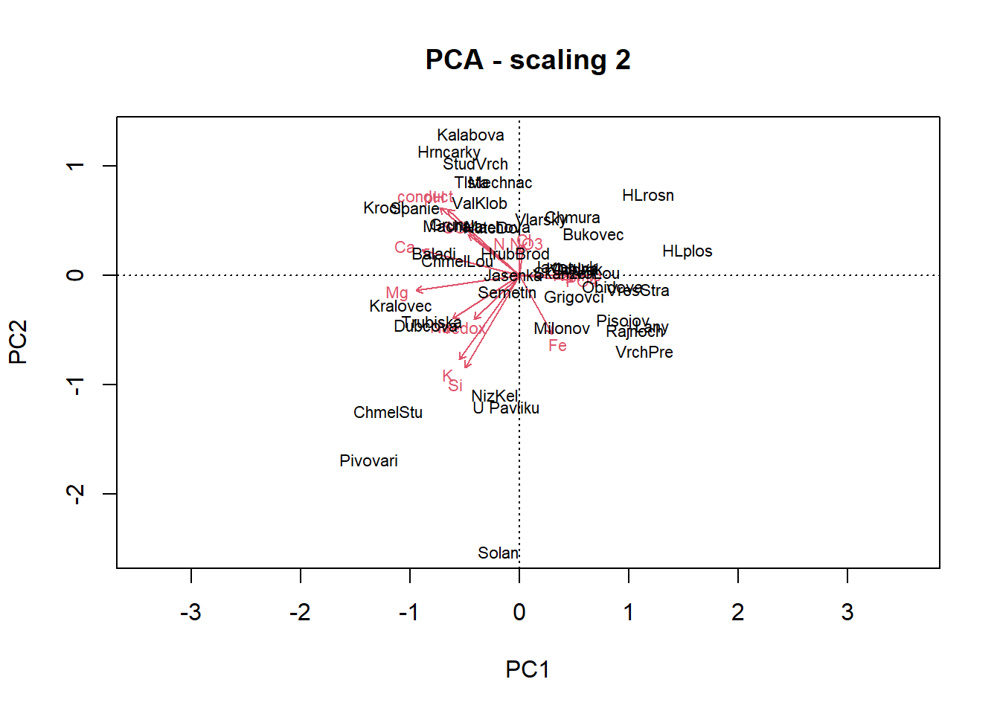

# Librerías requeridas
library(tidyverse) # Para procedimientos de las bases de datos
library(readxl) # Cargar bases de datos con Tidyverse
library(corrplot) # Para figuras de elipses
library(vegan) # Para el PCA y Transf. Hellinger
library(factoextra) # Para el PCA
library(kableExtra) # Para Editar las tablas
library(viridis) # Para paletas de colores automáticasPautas Estudios de Caso
Descripción de la actividad
El propósito de este ejercicio es servir de guía para el primer seguimiento de la asignatura, en el que se requiere realizar un análisis exporatorio e iniciar con el análisis de componentes principales (primeras semanas de la asignatura). No se abordan aspectos como PCA y NMDS en los paquetes definitivos como el ggplot2, porque para ello se cuenta con guías detalladas en el repositorio. Es solo para orientar al estudiante en la manera de iniciar a enfrentar el procesamiento y visualización de datos, con algunos detalles de exploración gráfica y de técnicas de ordenación multivariada.
Nota: Para los estudios de caso asignados, NO se utilizarán figuras como las de PCA o NMDS en paquetes como el vegan. Para ello se utilizarán las guías de PCA y de NMDS del repositorio.
El siguiente ejercicio muestra como es el procedimiento inicial para las bases de datos que cuenten con muchas variables biológicas y se requiera resumirlas para el análisis exploratorio y algunas las técnicas multivariadas como PCA y NMDS, basado en los siguientes pasos:
- Cargar bases de datos biológicas y ambientales al RStudio.
- Escoger las 15 especies más abundantes, para explorar las relaciones entre especies y con las variables ambientales. Este resumen de taxones solo se usará en la exploración, luego en las técnicas se requiere trabajar con todas.
- Utilizar todas las variables biológicas para la implementación de las técnicas multivariadas, como el PCA y el NMDS.
Materiales requeridos para el ejercicio
Se requiere descargar todos estos archivos en un mismo directorio o carpeta.
1. Caso Moluscos del Caribe

Paso 1. Cargar las librerías necesarias
Paso 2. Cargar las Las bases de datos
datos1 <- read_csv2("mollusca_resum.csv") # paquete "readxl"
#View(datos1)datos2 <- read_xlsx("mollusca_resum.xlsx","mollusca_resum")
#View(datos2)# Variables ambientales
amb <- datos1[,2:10]
head(amb) %>%
kbl(booktabs = F) %>%
kable_classic(full_width=F, html_font = "Cambria")| Lat | Long | Rangos Prof. | Región | T | Sal | Den | O2% | Chla |
|---|---|---|---|---|---|---|---|---|
| 12.57 | -71.84 | 200-330 | N | 14.417417 | 35.77823 | 28.05902 | 5.661250 | 0.0000000 |
| 12.40 | -72.26 | 200-330 | N | 14.558083 | 35.81073 | 28.03527 | 5.658750 | 0.0022727 |
| 12.25 | -72.55 | 200-330 | N | 13.257708 | 35.58709 | 28.18331 | 5.422500 | 0.0000000 |
| 12.53 | -72.13 | 370-550 | N | 9.985375 | 35.08902 | 29.05506 | 5.222500 | 0.0000000 |
| 12.49 | -72.26 | 370-550 | N | 10.176167 | 35.11689 | 29.00189 | 5.248750 | 0.0159091 |
| 11.49 | -73.39 | 370-550 | N | 9.591250 | 35.04993 | 29.15316 | 5.015833 | 0.0090909 |
# Variables biológicas
spe <- datos1[,11:69]
head(spe) %>%
kbl(booktabs = F) %>%
kable_classic(full_width=F, html_font = "Cambria")| Ptrars | Orthyc | Gzolvc | Nclncs | Arczbr | Mcmtnt | Trgnca | Lvcrds | Xnphrl | Nclnac | Prpmsd | Tllnpr...22 | Csmsp. | Abrlng | Plystt | Nmcrdt | Pctnch | Aqpctl | Nldltt | Nmcrdp | Brbtcn | Llsp.1 | Lptchb | Prtlnn | Lvdntc | Tllnpr...36 | Smrsst | Ccclnm | Prmymr | Mcmpsd | Lvcrdl | Tllnmr | Nclplc | Clyptc | Prmyrs | Scphwr | Flgrfb | Nsssp. | Nelsp. | Mlnclr | Nclnvt | Tllnjt | Lcsyrv | Crdmyp | Plrbri | Ntcrth | Nclsp. | Cccsp. | Lvcrdp | Antsp. | Tndrcy | Cmpsdg | Orthys | Pzllor | Sirtsb | Entlnp | Ccclnr | Dntlma | Cplsp. |
|---|---|---|---|---|---|---|---|---|---|---|---|---|---|---|---|---|---|---|---|---|---|---|---|---|---|---|---|---|---|---|---|---|---|---|---|---|---|---|---|---|---|---|---|---|---|---|---|---|---|---|---|---|---|---|---|---|---|---|
| 0 | 1 | 0 | 0 | 0 | 0 | 0 | 0 | 46 | 22 | 0 | 0 | 0 | 0 | 4 | 0 | 0 | 0 | 0 | 0 | 0 | 0 | 0 | 0 | 0 | 0 | 2 | 0 | 0 | 0 | 0 | 0 | 0 | 0 | 0 | 7 | 1 | 0 | 0 | 0 | 0 | 0 | 0 | 0 | 0 | 0 | 0 | 0 | 0 | 0 | 0 | 0 | 0 | 6 | 3 | 0 | 0 | 0 | 17 |
| 0 | 2 | 0 | 0 | 0 | 0 | 0 | 0 | 0 | 41 | 0 | 0 | 0 | 0 | 26 | 0 | 0 | 0 | 0 | 0 | 0 | 0 | 0 | 0 | 0 | 0 | 3 | 0 | 0 | 0 | 0 | 0 | 0 | 0 | 0 | 2 | 1 | 0 | 0 | 0 | 0 | 0 | 0 | 0 | 0 | 0 | 0 | 0 | 0 | 0 | 0 | 0 | 0 | 8 | 9 | 0 | 0 | 0 | 1 |
| 0 | 0 | 0 | 0 | 0 | 0 | 0 | 0 | 3 | 1 | 0 | 0 | 0 | 0 | 0 | 0 | 0 | 0 | 0 | 0 | 0 | 0 | 0 | 0 | 0 | 0 | 2 | 0 | 0 | 0 | 0 | 0 | 0 | 0 | 0 | 3 | 1 | 0 | 2 | 0 | 0 | 0 | 0 | 0 | 0 | 0 | 0 | 0 | 0 | 0 | 0 | 0 | 0 | 1 | 3 | 0 | 0 | 0 | 0 |
| 0 | 29 | 6 | 0 | 0 | 0 | 0 | 0 | 50 | 0 | 0 | 0 | 0 | 0 | 0 | 0 | 0 | 0 | 0 | 0 | 0 | 0 | 0 | 22 | 0 | 0 | 2 | 0 | 0 | 0 | 0 | 0 | 42 | 0 | 2 | 0 | 2 | 0 | 0 | 0 | 0 | 0 | 1 | 0 | 0 | 0 | 0 | 0 | 0 | 0 | 0 | 12 | 0 | 0 | 0 | 0 | 0 | 0 | 0 |
| 0 | 46 | 8 | 0 | 0 | 0 | 0 | 0 | 57 | 0 | 0 | 0 | 0 | 0 | 0 | 0 | 0 | 0 | 0 | 0 | 0 | 0 | 0 | 17 | 0 | 0 | 3 | 0 | 0 | 0 | 0 | 0 | 24 | 0 | 4 | 0 | 3 | 0 | 0 | 0 | 0 | 0 | 3 | 0 | 0 | 0 | 0 | 0 | 0 | 0 | 0 | 4 | 0 | 0 | 0 | 0 | 0 | 0 | 0 |
| 0 | 3 | 0 | 0 | 0 | 0 | 0 | 0 | 1 | 0 | 0 | 0 | 0 | 0 | 6 | 0 | 0 | 0 | 0 | 0 | 0 | 0 | 4 | 0 | 0 | 0 | 5 | 0 | 0 | 0 | 0 | 0 | 0 | 0 | 0 | 3 | 0 | 0 | 0 | 0 | 0 | 0 | 0 | 0 | 0 | 0 | 0 | 0 | 0 | 0 | 0 | 0 | 0 | 0 | 1 | 0 | 0 | 0 | 5 |
Paso 3. Extraer las 15 especies más abundantes
3.1 Filtrado con comandos generales
Se puede trabajar con los promedios o los totales de las especies más abundantes. Este procedimiento se realiza para que las figuras de exploración de relación entre taxones y también con variables ambientales, no se saturen y puedan visualizarse de mejor manera.
# Extraer los promedios de las abundancias
prom = colMeans(spe)
# Extraer las 15 especies más abundantes
# FALSE muestra las 15 menos abundantes
ab <- names(sort(prom, decreasing = TRUE)[1:15])
# Crear un nuevo dataframe con las dos columnas seleccionadas
spe.ab <- data.frame(datos1[, ab])
# Otra opción de dataframe: spe.ab <- datos1[, ab]
head(spe.ab) %>%
kbl(booktabs = F) %>%
kable_classic(full_width=F, html_font = "Cambria")| Orthyc | Gzolvc | Arczbr | Lvcrds | Mcmtnt | Xnphrl | Prpmsd | Ptrars | Nclncs | Tllnpr...22 | Csmsp. | Nclnac | Plystt | Abrlng | Pctnch |
|---|---|---|---|---|---|---|---|---|---|---|---|---|---|---|
| 1 | 0 | 0 | 0 | 0 | 46 | 0 | 0 | 0 | 0 | 0 | 22 | 4 | 0 | 0 |
| 2 | 0 | 0 | 0 | 0 | 0 | 0 | 0 | 0 | 0 | 0 | 41 | 26 | 0 | 0 |
| 0 | 0 | 0 | 0 | 0 | 3 | 0 | 0 | 0 | 0 | 0 | 1 | 0 | 0 | 0 |
| 29 | 6 | 0 | 0 | 0 | 50 | 0 | 0 | 0 | 0 | 0 | 0 | 0 | 0 | 0 |
| 46 | 8 | 0 | 0 | 0 | 57 | 0 | 0 | 0 | 0 | 0 | 0 | 0 | 0 | 0 |
| 3 | 0 | 0 | 0 | 0 | 1 | 0 | 0 | 0 | 0 | 0 | 0 | 6 | 0 | 0 |
3.2 Filtrado con comandos tidyverse
Este procedimiento es similar al atenrior, solo que se trabaja con comandos del lenguaje tidyvere.
# Extraer los promedios de las abundancias
prom <- spe %>%
summarise_all(mean)
# Obtener los nombres de las 15 especies más abundantes
ab <- prom %>%
pivot_longer(cols = everything()) %>%
arrange(desc(value)) %>%
slice(1:15) %>%
pull(name)
# Crear un nuevo dataframe con las dos columnas seleccionadas
spe_ab <- datos1 %>%
select(all_of(ab))
# Mostrar las primeras filas del nuevo dataframe
head(spe_ab) %>%
kbl(booktabs = F) %>%
kable_classic(full_width=F, html_font = "Cambria")| Orthyc | Gzolvc | Arczbr | Lvcrds | Mcmtnt | Xnphrl | Prpmsd | Ptrars | Nclncs | Tllnpr...22 | Csmsp. | Nclnac | Plystt | Abrlng | Pctnch |
|---|---|---|---|---|---|---|---|---|---|---|---|---|---|---|
| 1 | 0 | 0 | 0 | 0 | 46 | 0 | 0 | 0 | 0 | 0 | 22 | 4 | 0 | 0 |
| 2 | 0 | 0 | 0 | 0 | 0 | 0 | 0 | 0 | 0 | 0 | 41 | 26 | 0 | 0 |
| 0 | 0 | 0 | 0 | 0 | 3 | 0 | 0 | 0 | 0 | 0 | 1 | 0 | 0 | 0 |
| 29 | 6 | 0 | 0 | 0 | 50 | 0 | 0 | 0 | 0 | 0 | 0 | 0 | 0 | 0 |
| 46 | 8 | 0 | 0 | 0 | 57 | 0 | 0 | 0 | 0 | 0 | 0 | 0 | 0 | 0 |
| 3 | 0 | 0 | 0 | 0 | 1 | 0 | 0 | 0 | 0 | 0 | 0 | 6 | 0 | 0 |
Paso 4. Exploración de relaciones
Nota: Solo se muestran algunas de las opciones gráficas para la exploración de relaciones con elipses. Para más detalles hay que revisar la guía de exploratorios en el repositorio.
4.1 Elipses para especies
# Elipses para especies
# Elipses para especies
M1 <- cor(spe.ab) # Matriz de Correlación (M)
corrplot(M1, method = "ellipse") 4.2 Elipses para ambientales vs. especies

4.3 Figura de burbujas
Para esta figura se requiere como mínimo, contar con una variable agrupadora o factor, que para este caso es rangos de profundidad (Rangos Prof.), los taxones que serán denominados Taxas y una o más variables ambientales, que para este caso serán, temperatura, salinidad, densidad, oxígeno y clorofila.
Opción 1. Se usará el comando gather, para extraer solo a la variable ambiental temperatura. Este procedimiento es más largo pero más sencillo que el de la opción 2, porque hay que realizar este procedimiento por separado, para cada variable ambiental cuantitativa que se tenga.
# Columnas 4:5= factores, 6:10= ambientales, 11:69= especies
datos <- read_xlsx("mollusca_resum.xlsx","mollusca_resum")
# Base filtrada, solo con un factor, una ambiental (Depth) y los Taxas
biol1a = data.frame(Prof=datos[,4], datos[,c(6,11:69)])
# Opcion1: para pocas ambientales (Depth)
biol1b <-
biol1a %>%
gather(Taxas, Abundancia,
-Rangos.Prof., -T)Opción 2. Se usará el comando pivot_longer, para extraer a diferentes variables ambientales. Este procedimiento es más corto que el anterior, porque permite extraer a todas las ambientales y no hacerlo por separado.
# Columnas 4:5= factores, 6:10= ambientales, 11:69= especies
datos <- read_xlsx("mollusca_resum.xlsx","mollusca_resum")
# Base filtrada, solo con un factor, una ambiental (Depth) y los Taxas
biol1a = data.frame(Prof=datos[,4], datos[,c(6:10,11:69)])
# Opcion2: para varias ambientales
biol1b <-
biol1a %>%
pivot_longer(
cols = -c(Rangos.Prof., T, Sal, O2., Chla),
names_to = "Taxas",
values_to = "Abundancia"
)A continuación se organizan los datos para ser graficados.
# Extraer a los valores de abundancias > 0
biol1b <- biol1b %>%
filter(Abundancia > 0)
# Configurar los factores requeridos
biol1b$Taxas = as.factor(biol1b$Taxas)
biol1b$Rangos.Prof. = as.factor(biol1b$Rangos.Prof.)
# Volver factor al resto de ambientales
# Calcular la Abundancia total por grupo, para luego ordenar taxones
abundance_order1 <- biol1b %>%
group_by(Taxas) %>%
summarise(total_abundance = sum(Abundancia)) %>%
arrange((total_abundance)) %>%
pull(Taxas)
# Ordenar taxones de menor a mayor abundancia
biol1b$Taxas <- factor(biol1b$Taxas, levels = abundance_order1)a) Figura de burbujas por rangos de profundidad vs. temperatura.
Nota 1: basicamente lo que se ajusta son los ejes de la estética (aes), la escala de x (scale_x_continuous) y los intervalos de las líneas verticales (geom_vline) que deben coincidir con los valores de x.
El eje x es el gradiente de la variable ambiental (temperatura), el eje y proyecta a los taxones, el tamaño de los circulos son las abundancias y los colores son los rangos de profundidad.
Nota 2: Para estos casos en los que se cuenta con muchas especies, se puede graficar solo a las 15 o 20 especies más abundantes, para no saturar al eje y.
# Gráfico mejorado con eje Y ordenado por Salinidad (más abundante en la parte superior)
ggplot(biol1b, aes(x = T, y = Taxas, size = Abundancia, color = Rangos.Prof.)) +
geom_point(alpha = 0.7) +
scale_size(range = c(1.4, 19)) +
scale_color_viridis(discrete = TRUE) +
scale_size(name = "Tamaño", range = c(1, 8)) +
scale_x_continuous(
limits = c(5, 30), # Rangos que dependen de la variable ambiental
breaks = seq(5, 30, by = 5) # Establecer intervalos de 1.000
) +
theme_bw() +
theme(
panel.grid.major = element_blank(), # Eliminar la cuadrícula principal
panel.grid.minor = element_blank(), # Eliminar la cuadrícula menor
axis.ticks.y = element_line(color = "black"), # Marcas de graduación del eje y
axis.text.x = element_text(size = 9, angle = 45, hjust = 1), # Rotar los valores del eje x a 45 grados
axis.text.y = element_text(size = 9), # Tamaño del texto en el eje y
axis.title.x = element_blank(), # Quitar el título del eje x
axis.title.y = element_blank(), # Quitar el título del eje y
) +
geom_vline(xintercept = c(5,10,15,20,25, 30), color = "gray") +
guides(
size = guide_legend(title = NULL,
override.aes = list(shape = 1,
color = "#377eb8",
stroke = 1.2)), # Grosor de los círculos
color = guide_legend(title = NULL,
override.aes = list(size = 5)) # Elimina el título de la leyenda
)b) Figura de burbujas por rangos de profundidad vs. salinidad.
El eje x es el gradiente de la variable ambiental (salinidad), el eje y proyecta a los taxones, el tamaño de los circulos son las abundancias y los colores son los rangos de profundidad.
# Gráfico mejorado con eje Y ordenado por Salinidad (más abundante en la parte superior)
ggplot(biol1b, aes(x = Sal, y = Taxas, size = Abundancia, color = Rangos.Prof.)) +
geom_point(alpha = 0.7) +
scale_size(range = c(1.4, 19)) +
scale_color_viridis(discrete = TRUE) +
scale_size(name = "Tamaño", range = c(1, 8)) +
scale_x_continuous(
limits = c(34.8, 37), # Rangos que dependen de la variable ambiental
breaks = seq(34.8, 37, by = 0.5) # Establecer intervalos de 1.000
) +
theme_bw() +
theme(
panel.grid.major = element_blank(), # Eliminar la cuadrícula principal
panel.grid.minor = element_blank(), # Eliminar la cuadrícula menor
axis.ticks.y = element_line(color = "black"), # Marcas de graduación del eje y
axis.text.x = element_text(size = 9, angle = 45, hjust = 1), # Rotar los valores del eje x a 45 grados
axis.text.y = element_text(size = 9), # Tamaño del texto en el eje y
axis.title.x = element_blank(), # Quitar el título del eje x
axis.title.y = element_blank(), # Quitar el título del eje y
) +
geom_vline(xintercept = c(34.8,35,35.5,36,36.5,37), color = "gray") +
guides(
size = guide_legend(title = NULL,
override.aes = list(shape = 1,
color = "#377eb8",
stroke = 1.2)), # Grosor de los círculos
color = guide_legend(title = NULL,
override.aes = list(size = 5)) # Elimina el título de la leyenda
)
Nota: hacer lo mismo para el resto de variables ambientales y analizar los patrones.
Paso 5. Técnica de PCA - factoExtra
Nota: factoExtra es un paquete dinámico y apropiado para la realización de pca. Recomiendo utilizarlo en el estudio de caso, siguiendo las pautas de las guías del repositorio. A continuación se muestra solo una forma de usar variables ambientales y una variable agrupadora (rangos de profundidad).
5.1 Linealización de las abundancias
En la siguiente tabla, solo se mestran las seis primeras filas y las siete primeras columnas, para resumir el reporte, pero se usarán todas las variables y filas con las que se cuenta.
# Siete primeros Taxones transformados con Hellinger
spe.hel= decostand(spe,"hellinger")
# Mostrar las primeras filas del nuevo dataframe
head(round(head(spe.hel[,1:7]),2)) %>%
kbl(booktabs = F) %>%
kable_classic(full_width=F, html_font = "Cambria")| Ptrars | Orthyc | Gzolvc | Nclncs | Arczbr | Mcmtnt | Trgnca |
|---|---|---|---|---|---|---|
| 0 | 0.10 | 0.00 | 0 | 0 | 0 | 0 |
| 0 | 0.15 | 0.00 | 0 | 0 | 0 | 0 |
| 0 | 0.00 | 0.00 | 0 | 0 | 0 | 0 |
| 0 | 0.42 | 0.19 | 0 | 0 | 0 | 0 |
| 0 | 0.52 | 0.22 | 0 | 0 | 0 | 0 |
| 0 | 0.33 | 0.00 | 0 | 0 | 0 | 0 |
5.2 PCA para variables ambientales
Para este procedimiento se requiere convertir las variables agrupadoras a factor.
# str(amb)
# Rangos de prof a factor
amb$`Rangos Prof.`=as.factor(amb$`Rangos Prof.`)
# str(amb) A continuación se muestra el primer paso del pca, relacionado a la matriz de asociación de variables ambientales, que en este caso es la de correlación (scale.=T) y el reporte de la varianza acumulada en los dos primeros ejes, que para este caso es 0.93 (93%). Los detalles de este y el resto de procedimientos se encuentran en las guías asignadas del repositorio.
pca1 <- prcomp(amb[,5:9],scale.=T)
summary(pca1)Importance of components:
PC1 PC2 PC3 PC4 PC5
Standard deviation 2.0722 0.60345 0.5143 0.27451 0.04298
Proportion of Variance 0.8588 0.07283 0.0529 0.01507 0.00037
Cumulative Proportion 0.8588 0.93166 0.9846 0.99963 1.00000Enlace de la figura ENLACE. Interesante que factoExtra utiliza comandos flexibles de ggplot2, como theme_bw() y theme().
2. Caso Briofitos

Este es el segundo ejemplo, que se diferencia del anterior, porque no cuenta con una variable agrupadora, pero se explica una opción usando un pca, acoplado a un clúster no jerárquico para su construcción.
Paso 1. Cargar las librerías necesarias
# Librerías requeridas
library(readxl) # Cargar bases de datos con Tidyverse
library(corrplot) # Para figuras de elipses
library(vegan) # Para el PCA y Transf. Hellinger
library(factoextra) # Para el PCA
library(FactoMineR) # Para el PCA
library(kableExtra) # Para Editar las tablas
library(MASS) # Para el NMDS
library(magrittr) # Para el NMDS
library(dplyr) # Para el NMDS
library(ggpubr) # Para el NMDS
library(viridis) # Para paletas de colores automáticas
library(tidyverse) # Para procedimientos de las bases de datos
Paso 2. Cargar las Las bases de datos
Este caso es el típico en el que cada base de datos se encuentra en un archivo u hoja de cálculo de excel por separado.
spe <- read_xls("molluscs-vasc-bryo.xls","bryo")
#View(spe)
# str(spe) # 44 columnas, 1a es categóricaamb <- read_xls("molluscs-vasc-bryo.xls","env")
#View(amb)
# str(amb) # 15 columnas, 1a es categórica
Paso 3. Extraer las 15 especies más abundantes
Filtrado con comandos generales
# Extraer los promedios de las abundancias
prom = colMeans(spe[,-1])
# Extraer las 15 especies más abundantes
# FALSE muestra las 15 menos abundantes
ab <- names(sort(prom, decreasing = TRUE)[1:15])
# Crear un nuevo dataframe con las dos columnas seleccionadas
spe.ab <- data.frame(spe[, ab])
# Otra opción de dataframe: spe.ab <- datos1[, ab]
head(spe.ab) %>%
kbl(booktabs = F) %>%
kable_classic(full_width=F, html_font = "Cambria")| CalCusp | BryPseu | CamStel | CraComm | PlaAffi | CliDend | DreCoss | HomNite | AulPalu | FisAdia | SphTere | CraFili | HypPrat | PhiFont | PhiCalc |
|---|---|---|---|---|---|---|---|---|---|---|---|---|---|---|
| 3 | 5 | 7 | 7 | 3 | 0 | 0 | 0 | 0 | 3 | 0 | 0 | 0 | 0 | 0 |
| 5 | 2 | 2 | 0 | 3 | 3 | 0 | 5 | 3 | 0 | 7 | 0 | 3 | 3 | 0 |
| 6 | 3 | 2 | 0 | 6 | 2 | 2 | 7 | 5 | 2 | 0 | 0 | 3 | 6 | 0 |
| 0 | 2 | 3 | 3 | 7 | 6 | 0 | 0 | 0 | 5 | 0 | 3 | 0 | 0 | 0 |
| 3 | 7 | 0 | 1 | 5 | 5 | 7 | 0 | 6 | 0 | 0 | 0 | 5 | 3 | 0 |
| 6 | 6 | 5 | 7 | 5 | 0 | 0 | 0 | 0 | 2 | 0 | 2 | 0 | 0 | 0 |
Paso 4. Exploración de relaciones
4.1 Elipses para especies
# Elipses para especies
M1 <- cor(spe.ab) # Matriz de Correlación (M)
corrplot(M1, method = "ellipse",order="AOE")
Paso 5. Técnica de PCA
5.1 Linealización de las abundancias
# Siete primeros Taxones transformados con Hellinger
spe.hel= decostand(spe[,-1],"hellinger")
# Mostrar las primeras filas del nuevo dataframe
head(round(head(spe.hel[,1:7]),2)) %>%
kbl(booktabs = F) %>%
kable_classic(full_width=F, html_font = "Cambria")| AnePing | AtrUndu | AulPalu | BraGlar | BraMild | BraRivu | BryPseu |
|---|---|---|---|---|---|---|
| 0.26 | 0.00 | 0.00 | 0 | 0.00 | 0 | 0.41 |
| 0.18 | 0.18 | 0.22 | 0 | 0.31 | 0 | 0.18 |
| 0.19 | 0.00 | 0.30 | 0 | 0.00 | 0 | 0.23 |
| 0.00 | 0.00 | 0.00 | 0 | 0.00 | 0 | 0.24 |
| 0.00 | 0.00 | 0.35 | 0 | 0.00 | 0 | 0.38 |
| 0.00 | 0.00 | 0.00 | 0 | 0.00 | 0 | 0.43 |
5.2 PCA para variables ambientales
A continuación se muestra el primer paso del pca, relacionado a la matriz de asociación de variables ambientales, que en este caso es la de correlación (scale=TRUE) y el reporte de la varianza acumulada en los dos primeros ejes, que para este caso es 0.43 (43%). Los detalles de este y el resto de procedimientos se encuentran en las guías asignadas del repositorio.
# Realización del pca
amb <- data.frame(amb)
rownames(amb) <- amb[,1]
amb = as.data.frame(amb[,-1])
pca1 <- rda(amb, scale = TRUE)
# summary(pca1)Se visualiza la formación de tres grupos de localiades.

5.3 PCA para variables biológicas
# Realización del pca
spe <- data.frame(spe)
rownames(spe.hel) <- spe[,1]
pca2 <- rda(spe.hel[,-1]) También se visualiza la formación de tres grupos de localiades.
# Panel con dos figuras del pca
biplot(pca2, main="PCA - scaling 2", echo=FALSE)
Paso 6. Técnica de NMDS
6.1 NMDS para variables biológicas - vegan
No muestra un buen estrés o ajuste, por lo que se descarta.
# 1) Ordenación con el nmds
datos.nmds1 <- metaMDS(spe[,-1],trace = FALSE)
datos.nmds1
Call:
metaMDS(comm = spe[, -1], trace = FALSE)
global Multidimensional Scaling using monoMDS
Data: spe[, -1]
Distance: bray
Dimensions: 2
Stress: 0.1362225
Stress type 1, weak ties
Best solution was repeated 4 times in 20 tries
The best solution was from try 10 (random start)
Scaling: centring, PC rotation, halfchange scaling
Species: expanded scores based on 'spe[, -1]' Se visualiza la formación de tres grupos de localiades.
6.2 NMDS para variables biológicas - factoExtra
Escalamiento tomado del siguiente enlace Enlace Ver: Kruskal’s non-metric multidimensional scaling
De izquierda a derecha se visualizan mejor los tres grupos
initial value 25.045099
iter 5 value 19.383491
iter 10 value 18.444357
iter 15 value 18.255199
iter 20 value 18.115864
final value 18.031070
converged
Paso 7. Generación del factor
Como ya se vió en las pruebas con PCA y NMDS, se forman tres grupos. A continuación se formaran 4 grupos insertando a la variable agrupadora o factor grupo de la nueva base de datos datos.gr, con el método de clasificación jerárquico de ward (que se verá en el tema de clasificación con clúster), teniendo en cuenta un agrupamiento de las localidades, descrito en el libro de Borcard et al. (2018).
datos.w <- hclust(vegdist(spe[,-1]), "ward.D") # Grupos con Cluster con ward
grupo <- cutree(datos.w, k = 3) # Generar 3 grupos (factor grupo)
datos.gr=data.frame(grupo,spe) # Base de datos con el factor agrupador
datos.gr$grupo=as.factor(datos.gr$grupo) # Crear la columna gr como factor
rotulos <- c("A", "B", "C") # Nuevos rótulos a los tres grupos creados
datos.gr$grupo <- factor(datos.gr$grupo,
labels = rotulos)
#str(datos.gr)
# Presentación de la tabla con las 10 primeras filas
datos.gr[1:10,] %>%
kbl(booktabs = F) %>%
kable_classic(full_width=F, html_font = "Cambria")| grupo | Station | AnePing | AtrUndu | AulPalu | BraGlar | BraMild | BraRivu | BryPseu | CalCord | CalGiga | CalStram | CalCusp | CamStel | ChiPoly | CirPili | CliDend | CraComm | CraFili | DicBonj | DreCoss | DreExan | EucVert | EurHian | FisAdia | HomNite | HypPrat | LopBide | MarPoly | PelEndi | PelEpip | PhiCalc | PhiFont | PlaAffi | PlaUndu | PolComm | RhySqua | RhyTriq | SphFalla | SphFlex | SphPalu | SphSubs | SphTere | SphWarn | ThuPhil |
|---|---|---|---|---|---|---|---|---|---|---|---|---|---|---|---|---|---|---|---|---|---|---|---|---|---|---|---|---|---|---|---|---|---|---|---|---|---|---|---|---|---|---|---|---|
| A | Baladi | 2 | 0 | 0 | 0 | 0 | 0 | 5 | 0 | 0 | 0 | 3 | 7 | 0 | 0 | 0 | 7 | 0 | 0 | 0 | 0 | 0 | 0 | 3 | 0 | 0 | 0 | 0 | 0 | 0 | 0 | 0 | 3 | 0 | 0 | 0 | 0 | 0 | 0 | 0 | 0 | 0 | 0 | 0 |
| B | Bukovec | 2 | 2 | 3 | 0 | 6 | 0 | 2 | 0 | 3 | 0 | 5 | 2 | 0 | 3 | 3 | 0 | 0 | 0 | 0 | 0 | 0 | 0 | 0 | 5 | 3 | 0 | 0 | 0 | 0 | 0 | 3 | 3 | 0 | 0 | 7 | 0 | 0 | 0 | 0 | 0 | 7 | 0 | 2 |
| B | Cudrak | 2 | 0 | 5 | 0 | 0 | 0 | 3 | 0 | 0 | 0 | 6 | 2 | 0 | 2 | 2 | 0 | 0 | 0 | 2 | 0 | 0 | 0 | 2 | 7 | 3 | 0 | 0 | 0 | 0 | 0 | 6 | 6 | 0 | 0 | 3 | 2 | 0 | 1 | 0 | 0 | 0 | 1 | 0 |
| A | Dubcova | 0 | 0 | 0 | 0 | 0 | 0 | 2 | 0 | 0 | 0 | 0 | 3 | 0 | 0 | 6 | 3 | 3 | 0 | 0 | 0 | 0 | 0 | 5 | 0 | 0 | 2 | 0 | 0 | 2 | 0 | 0 | 7 | 3 | 0 | 0 | 0 | 0 | 0 | 0 | 0 | 0 | 0 | 0 |
| B | Grigovci | 0 | 0 | 6 | 0 | 0 | 0 | 7 | 0 | 5 | 0 | 3 | 0 | 0 | 2 | 5 | 1 | 0 | 0 | 7 | 0 | 0 | 0 | 0 | 0 | 5 | 0 | 0 | 0 | 0 | 0 | 3 | 5 | 0 | 0 | 0 | 0 | 0 | 0 | 0 | 0 | 0 | 0 | 0 |
| A | Grun | 0 | 0 | 0 | 0 | 0 | 0 | 6 | 0 | 0 | 0 | 6 | 5 | 0 | 0 | 0 | 7 | 2 | 0 | 0 | 0 | 0 | 0 | 2 | 0 | 0 | 0 | 0 | 0 | 0 | 0 | 0 | 5 | 0 | 0 | 0 | 0 | 0 | 0 | 0 | 0 | 0 | 0 | 0 |
| C | HLplos | 2 | 0 | 6 | 0 | 0 | 0 | 0 | 0 | 0 | 6 | 6 | 0 | 0 | 0 | 0 | 0 | 0 | 0 | 0 | 0 | 0 | 0 | 0 | 0 | 0 | 0 | 0 | 0 | 0 | 0 | 0 | 0 | 0 | 0 | 2 | 0 | 0 | 3 | 0 | 0 | 7 | 0 | 0 |
| C | HLrosn | 0 | 0 | 0 | 0 | 0 | 0 | 0 | 0 | 0 | 0 | 0 | 0 | 0 | 0 | 0 | 0 | 0 | 0 | 0 | 0 | 0 | 0 | 0 | 0 | 0 | 0 | 0 | 0 | 0 | 0 | 0 | 0 | 0 | 2 | 0 | 0 | 7 | 6 | 6 | 0 | 5 | 0 | 0 |
| A | Hrncarky | 0 | 0 | 0 | 0 | 0 | 2 | 6 | 0 | 0 | 0 | 6 | 2 | 0 | 0 | 0 | 8 | 3 | 0 | 0 | 0 | 0 | 2 | 0 | 0 | 0 | 0 | 0 | 0 | 0 | 3 | 0 | 0 | 0 | 0 | 0 | 0 | 0 | 0 | 0 | 0 | 0 | 0 | 0 |
| B | HrubBrod | 0 | 0 | 7 | 0 | 0 | 0 | 3 | 2 | 0 | 0 | 3 | 2 | 0 | 0 | 5 | 0 | 0 | 3 | 0 | 0 | 0 | 0 | 0 | 6 | 3 | 0 | 0 | 0 | 0 | 0 | 2 | 2 | 0 | 0 | 2 | 0 | 0 | 0 | 0 | 0 | 0 | 0 | 0 |
7.1 Figura de burbujas
Para esta figura se requiere como mínimo, contar con una variable agrupadora o factor, que para este caso es rangos de profundidad (Rangos Prof.), los taxones que serán denominados Taxas y una o más variables ambientales, que para este caso serán, temperatura, salinidad, densidad, oxígeno y clorofila.
Opción 2. Se usará el comando pivot_longer, para extraer a diferentes variables ambientales. Este procedimiento es más corto que el anterior, porque permite extraer a todas las ambientales y no hacerlo por separado.
# Columnas 1= factor, 2:9= ambientales, 10:58= especies
biol1a = data.frame(grupos=datos.gr[,1], amb[,1:4], spe[,-1])
# Opcion2: para varias ambientales
biol1b <-
biol1a %>%
pivot_longer(
cols = -c(grupos, Ca, Mg, Fe, K),
names_to = "Taxas",
values_to = "Abundancia"
)A continuación se organizan los datos para ser graficados.
# Extraer a los valores de abundancias > 0
biol1b <- biol1b %>%
filter(Abundancia > 0)
# Configurar los factores requeridos
biol1b$Taxas = as.factor(biol1b$Taxas)
biol1b$grupos = as.factor(biol1b$grupos)
# Volver factor al resto de ambientales
# Calcular la Abundancia total por grupo, para luego ordenar taxones
abundance_order1 <- biol1b %>%
group_by(Taxas) %>%
summarise(total_abundance = sum(Abundancia)) %>%
arrange((total_abundance)) %>%
pull(Taxas)
# Ordenar taxones de menor a mayor abundancia
biol1b$Taxas <- factor(biol1b$Taxas, levels = abundance_order1)Figura de burbujas por grupos vs. niveles de Calcio - Ca.
El eje x es el gradiente de la variable ambiental (Ca), el eje y proyecta a los taxones, el tamaño de los circulos son las abundancias y los colores son los grupos.
# Gráfico mejorado con eje Y ordenado por Ca (Taxones más abundante en la parte superior)
ggplot(biol1b, aes(x = Ca, y = Taxas, size = Abundancia, color = grupos)) +
geom_point(alpha = 0.7) +
scale_size(range = c(1.4, 19)) +
scale_color_viridis(discrete = TRUE) +
scale_size(name = "Tamaño", range = c(1, 8)) +
scale_x_continuous(
limits = c(0, 350), # Rangos que dependen de la variable ambiental
breaks = seq(0, 350, by = 50) # Establecer intervalos de 1.000
) +
theme_bw() +
theme(
panel.grid.major = element_blank(), # Eliminar la cuadrícula principal
panel.grid.minor = element_blank(), # Eliminar la cuadrícula menor
axis.ticks.y = element_line(color = "black"), # Marcas de graduación del eje y
axis.text.x = element_text(size = 9, angle = 45, hjust = 1), # Rotar los valores del eje x a 45 grados
axis.text.y = element_text(size = 9), # Tamaño del texto en el eje y
axis.title.x = element_blank(), # Quitar el título del eje x
axis.title.y = element_blank(), # Quitar el título del eje y
) +
geom_vline(xintercept = c(10,50,100,150,200,250,300,350), color = "gray") +
guides(
size = guide_legend(title = NULL,
override.aes = list(shape = 1,
color = "#377eb8",
stroke = 1.2)), # Grosor de los círculos
color = guide_legend(title = NULL,
override.aes = list(size = 5)) # Elimina el título de la leyenda
)Nota: hacer lo mismo para el resto de variables ambientales y analizar los patrones.
Paso 8. PCA con el factor - factoExtra
# PCA con variables biológicas
pca3 <- prcomp(datos.gr[,3:45])
# summary(pca3)Enlace de la figura ENLACE.